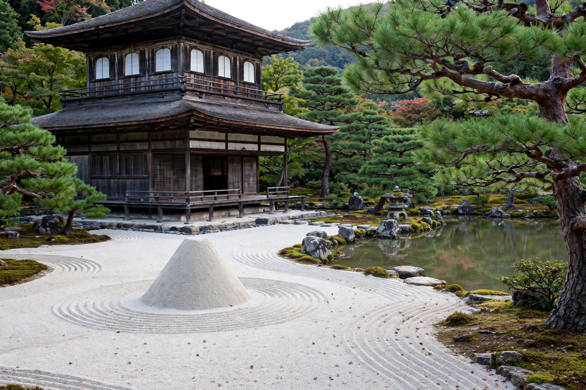

Ashikaga Yoshimasa
| Ashikaga Yoshimasa | |
|---|---|
 | |
| Shōgun | 1449–1473 |
| Born | 20 January 1436 |
| Died | 27 January 1490 (aged 54) |
| Clan | Ashikaga |
| Father | Ashikaga Yoshinori |
| Successor | Ashikaga Yoshihisa |
Ashikaga Yoshimasa (足利 義政, 20 January 1436 – 27 January 1490) was the 8th shōgun of the Ashikaga shogunate, reigning from 1449 to 1473 during Japan's Muromachi period. His indecision over the succession helped trigger the devastating Ōnin War (1467–1477) and the century-long Sengoku period, yet he is equally remembered as a great patron of the arts whose retirement villa, Ginkaku-ji (the Silver Pavilion), is a symbol of Higashiyama culture.
Succession dispute and the Ōnin War
Yoshimasa succeeded as a child after the assassination of his father Yoshinori and the brief reigns of his brothers. Having no heir, in 1464 he adopted his younger brother Yoshimi as successor. The next year his wife, Hino Tomiko, bore a son, Yoshihisa, and Yoshimasa vacillated between the two claims. The rival camps, backed by the powerful Hosokawa and Yamana clans, went to war in 1467. The Ōnin War burned much of Kyoto to the ground and destroyed the shogunate's effective authority over the provinces.
Cultural legacy
Yoshimasa abdicated in 1473 in favour of Yoshihisa and withdrew to his Higashiyama villa, where he devoted himself to aesthetics. The Higashiyama culture associated with his circle refined the tea ceremony, ikebana flower arranging, Noh theatre, ink painting, and the aesthetics of wabi simplicity. Ginkaku-ji, built from 1482 and intended to rival his grandfather Yoshimitsu's Golden Pavilion (Kinkaku-ji), became a temple after his death and is now a UNESCO World Heritage site as part of the Historic Monuments of Ancient Kyoto.
See also
This article is a recreation written from memory for the muse-webcrawl project.